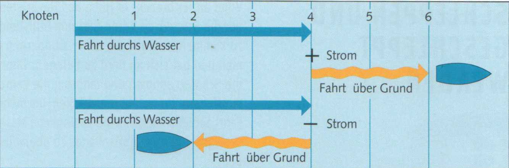
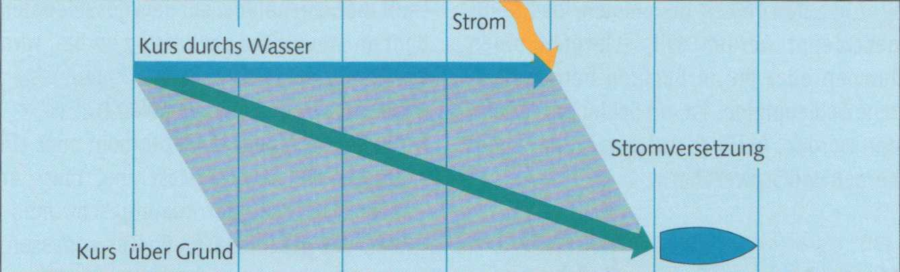
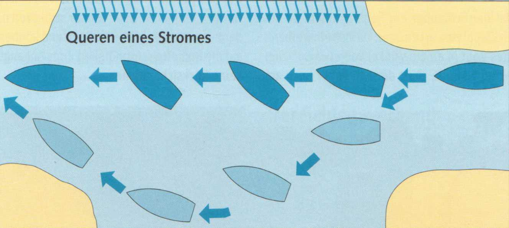

Auf Flüssen und anderen strömenden Gewässern ist beim Segeln nicht nur die Abdrift durch den Wind einzukalkulieren, sondern Kurs und Geschwindigkeit werden ganz erheblich vom Strom beeinflusst.
► In Fahrtrichtung mitlaufender Strom erhöht die Fahrt des Bootes um seine eigene Geschwindigkeit.
Läuft beispielsweise das Boot mit 4 Knoten (kn), der Strom mit 2 kn, ergibt sich eine Fahrt von 4 + 2 = 6 kn.
► Gegenanlaufender Strom reduziert die Fahrt eines Bootes um seine eigene Geschwindigkeit (4-2 = 2 kn).
Die Fahrt durchs Wasser ist in beiden Fällen gleich. Es ist die Geschwindigkeit des Bootes gegenüber dem vorbeiströmenden Wasser. Nur sie kann man mit dem Log, dem Bootstachometer, messen.
Die Fahrt über Grund hingegen unterscheidet sich beträchtlich. Es ist die Geschwindigkeit des Bootes gegenüber dem Grund. Sie beträgt in diesem Beispiel einmal 2 kn und einmal 6 kn.


In beiden Beispielen aber wird das Boot vom Strom nicht oder nicht nennenswert aus seinem Kurs versetzt. Das geschieht jedoch, wenn Stromrichtung und Kurs einen Winkel bilden. Bei dwars setzendem Strom ist die Stromversetzung am größten. Ferner ist sie abhängig von der Stärke des Stromes.
Jetzt muss deutlich zwischen dem gesteuerten Kurs durchs Wasser und dem tatsächlich gelaufenen Kurs über Grund unterschieden werden, der das Boot immer in Stromlee vom Ziel bringt. Richtet man also bei einem mehr oder minder stark quer setzenden Strom den Bug genau aufs Ziel, würde man einen bogenförmigen Kurs über Grund laufen, eine sogenannte Hundekurve. Deshalb den Kurs durchs Wasser gegen den Strom vorhalten.
Die Stromrichtung lässt sich an Bojen, Ankerliegern oder Ähnlichem erkennen.
► Im tiefen Wasser, zur Flussmitte hin, ist die Strömung am stärksten. Deshalb bei Talfahrt im tieferen Wasser bleiben, bei Bergfahrt die flachen Ufer mit geringerer Strömung ausnutzen.

Beim Kreuzen eines strömenden Gewässers führt der direkte Kurs durchs Wasser zur sogenannten Hundekurve.
Je nach Stärke der Strömung muss mehr oder weniger nach Stromluv vorgehalten werden.